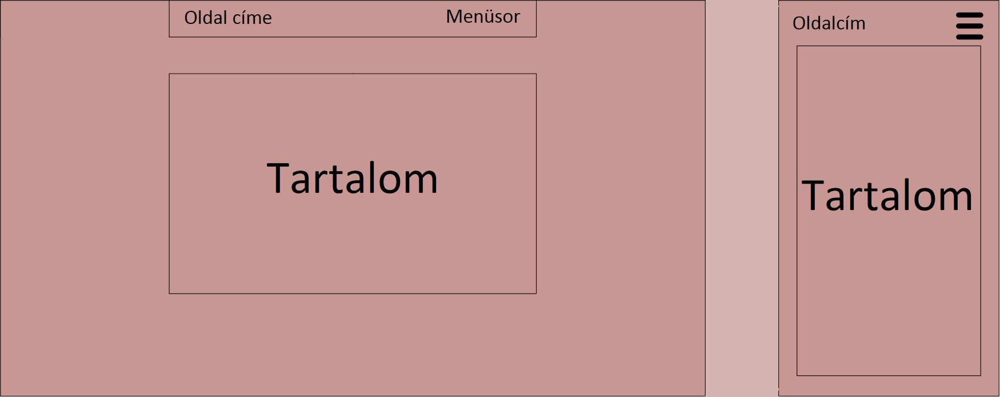

Dokumentáció
A feladat elkészítése során az alábbi problémákba ütköztem:
A responsive menü létrehozásakor a menü nem a kellő pillanatban váltott a menü ikonra.
Megoldás:
A menü elemei közti távolság lecsökkentése 4rem nagyságról 2rem nagyságra.
A responsive szöveg létrehozásakor a szöveg sorait nem tördelte a böngésző.
Megoldás:
A problémát az okozta, hogy a 'width' értékét rem-ben adtam meg, miután százalékos értéket vettem fel rá, a probléma megoldódott.
A 'Kapcsolat' menüpontban a szöveg és a kép egymásra folyt.
Megoldás:
A kép megjelenítésénél hozzáadtam a "style="max-width:100%;height:auto;" kiegészítést, továbbá a CSS fájlban a kicsinyített esethez a "padding-right: 10px;" kiegészítést.
Így a kép mérete mindig arányosan csökken, ha szükséges, továbbá lesz egy kis kihagyott terület a kép és a szöveg között.
A Google egyéni fontját nem olvasta be a kód.
Megoldás:
A font linkjét rossz helyre írtam, keresés után találtam rá arra a megoldásra, amit aztán
a CSS fájlban alkalmaztam.
Nem az általam kivánt kinézetet vette fel a program, több esetben sem.
Megoldás:
Különböző megoldásokkal próbálkoztam,
paraméterek átírásával, valamint rákerestem az interneten az adott problémára és ezekből az információkból sikerült az oldalt a kívánt kinézetűre módosítani.
A feladat elkészítése során az alábbi forrásokat használtam fel:
A feladat grafikai terve:
A feladat során tartottam magam az eredeti elképzelésemhez az oldal felépítéséről, jól kivehető,
hogy egy állandó szélességarányú menüsort és tartalmat szerettem volna, amely a kezdőoldalon kívül mindenhol megegyezik.
Viszont amennyiben kicsinyítjük az ablakot, a menüpontok helyét egy menüikon veszi át, és a menüpontok legördülő menüben jelennek meg.
A kivitelezés során több színkombinációt is kipróbáltam, majd az oldalon láthatóra esett a választásom, mivel letisztult, egyszerű, de szép kombinációt szerettem volna, és ezt
ez a színkombináció teljesíti.
Az alábbi képen látható a grafikai terv:

Egyéb megjegyzések:
A kapcsolat menüben az üzenetküldő panel nem működik, a fejlesztés esetleg a későbbiekben lehetséges.